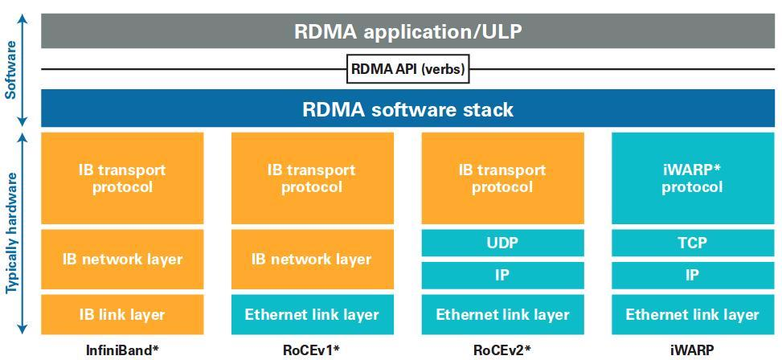
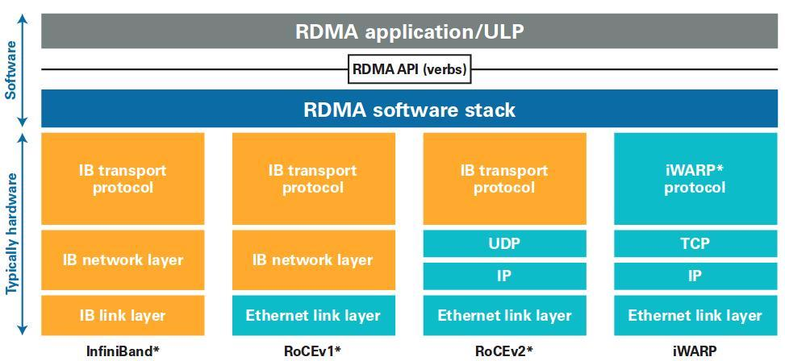

RDMA交流
交易结算研发部 谭浩通
2021-07-29
基本概念
DMA

- 解放CPU
- 避免污染L2 Cache
RDMA
 

- Zero-Copy
- Kernal by-pass
- 数据直接从应用内存传输到对端应用内存
- 无需CPU参与
- 没有中间缓存
- 应用直接访问CA
- 无需在内核态进行协议处理
- CA进行所有协议处理
RDMA特点
- 异步操作
- 传输与计算同时进行
- 传输方式
- 预知内存位置
- 预知消息大小
- 单边操作时没有通知
- 显式内存管理
- 只能使用已注册的内存
- 锁定物理内存
内存注册
- 内存注册过程会锁定内存页
- 避免页面被移出物理内存
- 保持物理地址 ⇔ 虚拟地址映射不变
- 在注册过程中，操作系统将会检查应用对内存页面的访问权限
- 注册过程会把虚拟地址与物理地址映射表写入网卡
RDMA两种传输模式
Send/Receive vs. RDMA Read/RDMA Write
Channel语义
Send/Receive
- 以消息为单位
- Send/Receive必须一一匹配
- 必须先Receive，再Send
- 双方都不需要知道对端内存地址
内存语义
RDMA Read/RDMA Write
- 由发起方执行所有操作
- 发起方需要知道被动方的虚拟内存位置和rkey
- 被动方不用执行任何操作
- 被动方没有任何反馈
- 不占用CPU
- 没有事件、没有完成通知
### 传输顺序
* 提交到同一个queue（``SQ``或``RQ``）的``WR``保证顺序
* ``SQ``和``RQ``之间没有顺序保证
* ``QP``之间没有顺序保证
表现有序
- 提交到同一个``SQ``的``WR``按提交顺序**初始化**、**发送**和**完成**
实现并行
- 对于提交到**同一个**``SQ``的多个``WR``的数据传输有可能**并行**
- 特别地，数据有可能以**任意顺序**被提交到目标内存
- 对于``RDMA_WRITE``，在后续发送一条消息，并且对方进行**接收并处理**了相应的``WC``前，目标内存的内容都是**不确定**的
- 需要和``Send``/``Receive``配合使用
——《Writing Application Programs for RDMA using OFA Software Part 3》P.65 - P.67
RDMA的代价
内存注册开销大
- 需要内核参与
- 耗时与注册内存大小正相关
- 与页数成正比
- 加大内存页有帮助
- page-fault影响很大
- 加重CPU负载、增加时延
内存拷贝影响大
- 耗时与内存大小正相关
- 与L2 Cache大小有关
- 污染L2 Cache
适合RDMA的场景
- 可复用连接 —— 摊分连接开销
- 传输大量数据 —— 降低轮询开销
- 尽量少同步点 —— 避免受RTT影响
- 可复用buffer —— 避免内存拷贝和注册开销
- 计算与传输可以并发
项目目标
- 用会 —— 怎么使用API
- 完成测试程序
- 完成基本测试
- 用好 —— 怎么发挥RDMA的优势
- 对测试程序进行调优
- 归纳总结
- 用对 —— 应用到合适的场景中
产出一篇论文
Power by impress.js*